Análisis de aguas, plantas envasadoras, plantas de beneficio animal y piscinas.
Calidad, precisión y confianza
Análisis confiables de alimentos y aguas, con respaldo técnico y atención cercana.
Agua y alimentosAnálisis especializados
MicrobiologíaFisicoquímicaControl de calidad
Galería BIOS
Personas que hacen posible cada resultado.


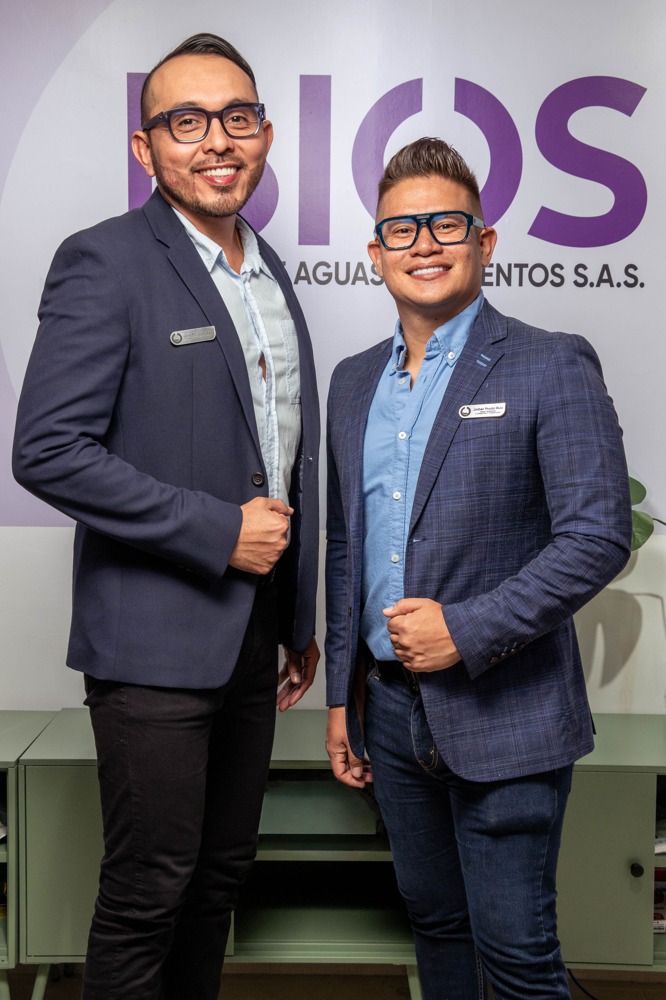
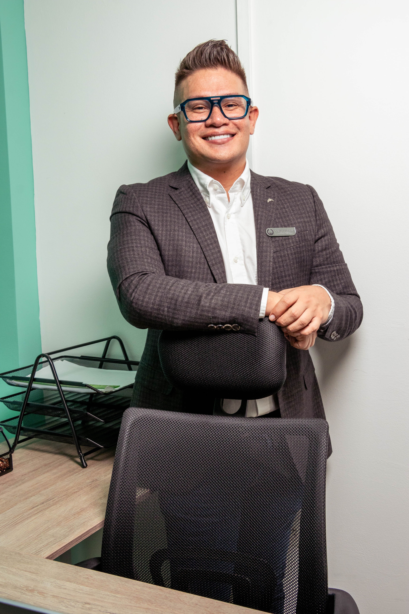
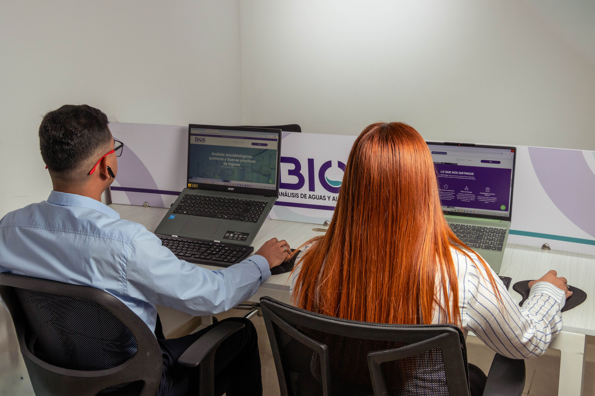
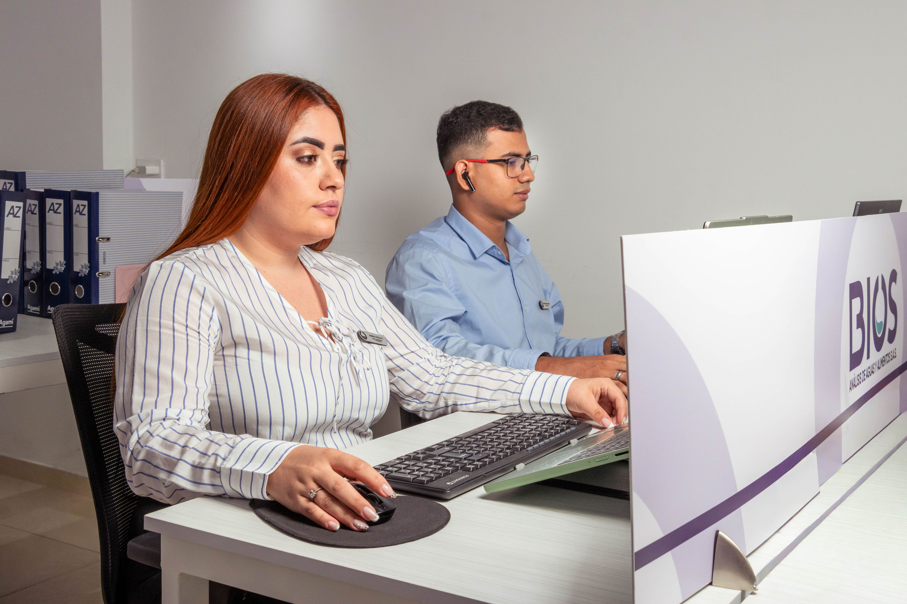

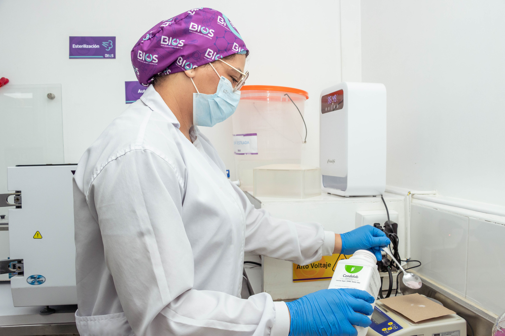
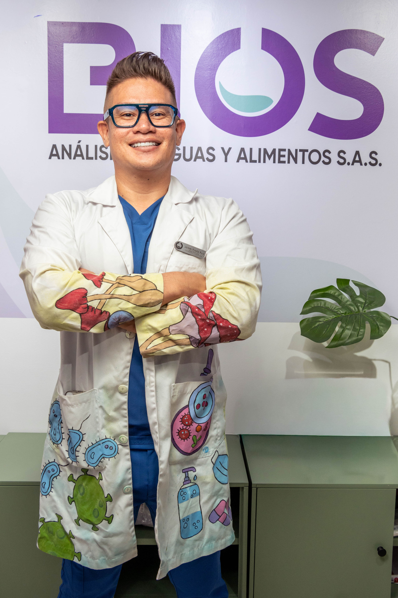
Laboratorio BIOS
Control de calidad para alimentos y aguas.
BIOS Análisis de Aguas y Alimentos S.A.S. es un laboratorio de control de calidad de alimentos y aguas. Somos su socio estratégico para garantizar la calidad y seguridad de sus productos. Nos especializamos en ofrecer análisis de aguas y alimentos de la más alta calidad, priorizando la confianza y precisión en cada resultado.
Nuestros servicios
Precisión para decisiones seguras.
Control microbiológico, físico y químico para alimentos preparados y agua potable.
Análisis para industrias panificadoras, pan, galletas y bizcochos.
Confianza y respaldo
Certificaciones y Asociaciones
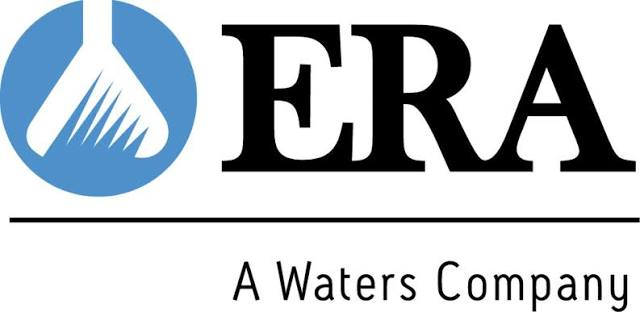
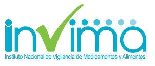
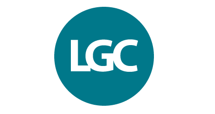
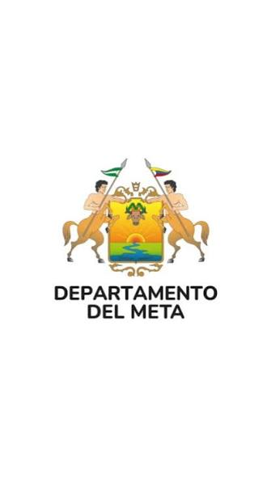
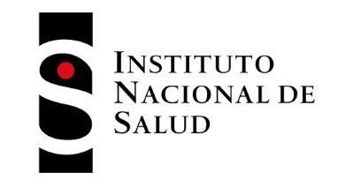
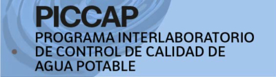
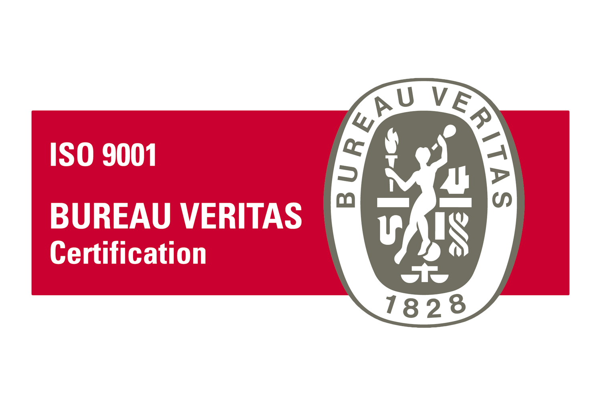
Contacto